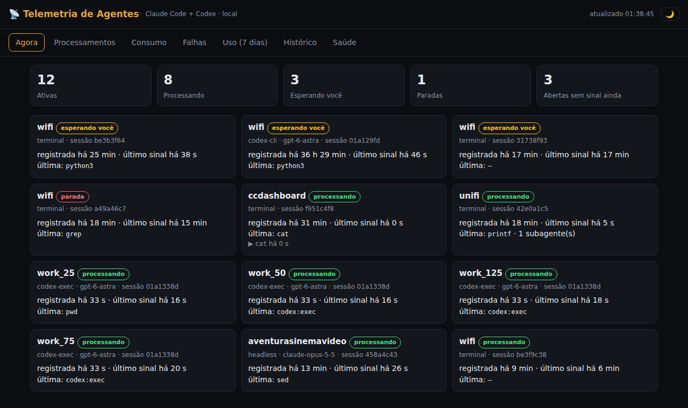
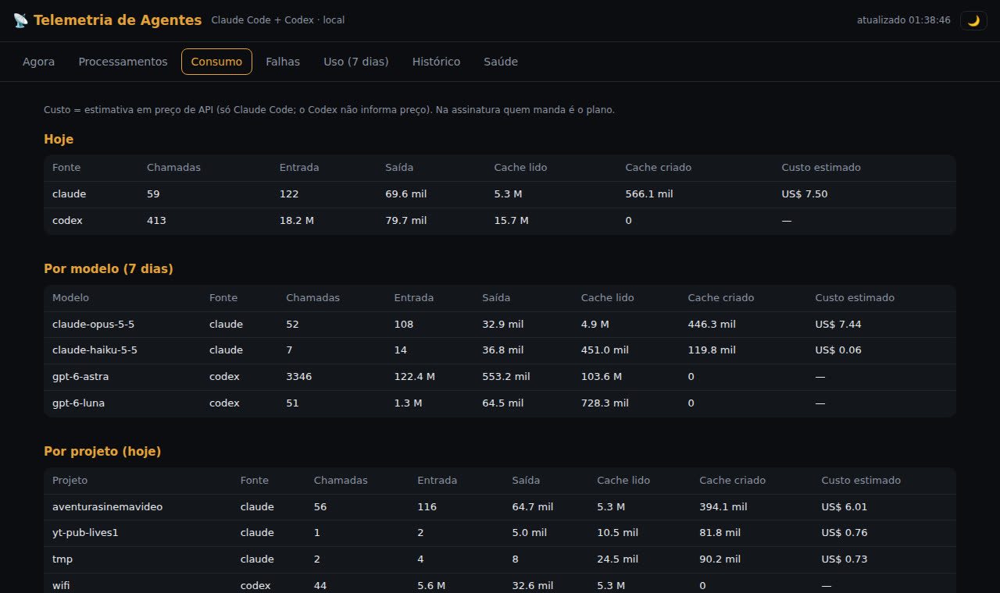

Un kit de prompts y un plan por fases para armar paneles que se actualizan solos: uno para tu negocio y otro para ver qué hace tu Claude Code, cuánto falla y cuánto costaría.
CC Dashboard es un kit en español para usar los Dashboards de Claude, paneles que guardan las consultas y rehacen las cuentas cada vez que los abres. Sirve para dueños de pequeños negocios y para quienes usan Claude Code todos los días. Trae prompts listos para armar paneles del negocio (dinero, atrasos, fugas) y un plan para medir tu propio Claude Code (costo estimado, herramientas, fallas). Para usarlo necesitas un plan de pago de Claude y, en las partes con base de datos, una cuenta gratuita en Supabase.
Un panel antiguo era una foto tomada una sola vez. El Dashboard de Claude guarda las consultas y las ejecuta de nuevo sobre tus datos cada vez que se abre.
Dónde está el dinero, qué está atrasado, dónde pierdes ingresos. Empieza con una app y crece hasta una base central que cruza varias.
Sesiones, tokens, caché, costo estimado, herramientas y servidores MCP que más fallan, skills más usadas y la salud del recolector.
Cada tarjeta muestra la consulta y la hora de la última actualización. El kit enseña a leer la consulta y a verificar un número en su origen antes de actuar.
El panel solo muestra lo que Claude logra leer. En el negocio, la lectura viene de los conectores; en Claude Code, viene de la telemetría que él mismo envía.
Nombre del modelo, de la herramienta, de la skill y del servidor MCP, conteo de tokens, costo estimado, duración, éxito o falla, tipo de error y nombre de la máquina.
Texto de los prompts y de las respuestas, comandos completos, rutas de archivos, entradas y salidas de herramientas, texto de error y correo electrónico. Del shell solo queda el nombre del programa.
Claude Code envía cada pocos segundos, el resumen se recalcula cada 10 min, el panel rehace las consultas al abrirse, y las otras apps solo están tan actualizadas como la última copia.
La función está en beta y cuenta en el uso de tu plan.
Pro, Max, Team o Enterprise. En Enterprise, un administrador activa los Dashboards en la configuración de la organización, en Artifacts.
Gratis para empezar (500 MB). El proyecto gratuito se pausa tras una semana sin uso. Solo se necesita en las fases con base central y en el panel de Claude Code.
Solo para el panel de observabilidad. Las variables sirven para Mac, Linux y Windows; pruébalo en tu sistema antes de confiar.
# dónde va la configuración
~/.claude/settings.jsonLos prompts están en la carpeta prompts/ del repositorio (en portugués). Cópialos, cambia lo que está entre corchetes y pégalos en un chat de Claude.
En Customize → Connectors, agrega la app donde está la respuesta. Para Supabase de solo lectura y restringido a un proyecto, usa un conector personalizado con esta dirección:
https://mcp.supabase.com/mcp?project_ref=SEU_PROJECT_REF&read_only=true
"¿Qué facturas están atrasadas y desde hace cuánto?" rinde más que "un gráfico de facturas". Da las definiciones y prohíbe modificar datos. Modelo completo en prompts/01-dashboard-negocio.md.
Arma un Dashboard de Claude usando mi conexión con [app]. Pregunta: [lo que cambia lo que haré mañana]. Definiciones: [saldo = total − pagado; pagado vacío = 0]. # Usa consultas guardadas, no modifiques datos, pregunta si falta algo.
Haz clic en el número y lee la consulta: fecha de referencia, qué registros entran, si descuenta pagos parciales y dónde quedan los bordes de los tramos. Después compara un número con la app de origen (prompts/02-conferir-numero.md).
# la consulta muestra cómo se calculó — no garantiza que esté correcto
Horas × facturas, suscripciones × cobros, utilidad × dinero en el banco: esto exige copiar los registros a Supabase. Empieza con una pregunta, dos tablas y un piloto de 90 días (prompts/03-base-central.md).
Quiero responder: ¿qué trabajo se entregó y nunca se facturó? # Claude propone el schema y el piloto y espera tu OK
Sin copia programada, el panel lee datos viejos. Pide una tarea diaria o semanal y una tarjeta "Última actualización" (prompts/05-agendar-atualizacao.md).
Crea una tarea programada que, todos los días a las 6h, vuelva a copiar [app] al schema [nombre].
Con el conector de Supabase con escritura (solo para el armado), pega prompts/04-observabilidade-claude-code.md en un chat nuevo. Claude pregunta el proyecto, la zona horaria y el nombre de la máquina, lista los pasos y espera tu OK.
# crea: schema cc_obs, función cc-coletor, resumen cada 10 min, limpieza diaria
Pega el bloque env en ~/.claude/settings.json (modelo en config/claude-code-otel.example.json). Cierra Claude Code por completo y ábrelo de nuevo: solo lee esas variables al iniciar.
{ "env": {
"CLAUDE_CODE_ENABLE_TELEMETRY": "1",
"OTEL_EXPORTER_OTLP_PROTOCOL": "http/json",
"OTEL_EXPORTER_OTLP_LOGS_ENDPOINT": "https://<ref>.supabase.co/functions/v1/cc-coletor/v1/logs",
"OTEL_EXPORTER_OTLP_HEADERS": "x-cc-key=<clave>",
… (bloque completo en el archivo de ejemplo)
} }
En una sesión nueva, envía un prompt simple y avisa a Claude en el chat. Él verifica que el recolector recibió los datos y arma las cinco pestañas. Dale un día de uso antes de juzgar los gráficos.
claude --debug-file /tmp/cc.log # si no llega nada, busca líneas [3P telemetry]
Lo que funciona bien: una pregunta que cambia una decisión, con una definición clara.
Saldo pendiente por tramo (por vencer, 1–30, 31–60, 61–90, 90+ días), por cliente, con la fecha de referencia explícita.
Horas registradas que no aparecen en ninguna línea de factura — exige una base central con las dos fuentes.
Resultado contable del mes frente al dinero que realmente entró y salió del banco.
Llamadas, % de falla y duración p50/p95 por herramienta y por servidor MCP en los últimos 7 días.
Tokens de caché leídos frente a creados por día — un caché que se reconstruye a cada rato aparece aquí.
Uso y costo estimado por skill y por tipo de subagente, para saber qué vale la pena mantener.
Un panel en tu propia máquina con todas las sesiones de Claude Code y de Codex: qué se está procesando, qué te espera, qué falló, tokens y costo estimado. Sin nube, sin API, sin cuenta nueva.
Cada sesión con la etiqueta procesando, esperándote, pide permiso o detenida, la última herramienta y el comando en ejecución.
Tokens de entrada, salida y caché por modelo, proyecto y día. Costo estimado a precio de API para Claude Code; Codex no informa precio.
Tasa de falla por herramienta y servidor MCP, procesos largos, skills y subagentes más usados, historial de 30 días.


Instala los hooks y OpenTelemetry en ~/.claude/settings.json (con copia de seguridad), el panel y el mantenimiento cada hora.
./help.sh # ayuda completa ./help.sh ligar # activa todo
En esta máquina o desde otro dispositivo de la red local. Solo responde a la red permitida en TELEMETRIA_REDES.
http://127.0.0.1:8766/ http://192.168.2.99:8766/ # en la red: usa la IP de tu máquina
Desactivar quita todo del settings.json y detiene los servicios; la base de datos se conserva.
telemetria/telemetria.sh status # qué está activo ./help.sh desligar # desactiva (la base se conserva) systemctl --user stop telemetria-painel.service # solo pausar el panel
Solo nombres (proyecto, herramienta, skill, programa) y números. Nunca texto del prompt, respuestas, comandos completos, rutas de archivo ni salida de herramientas. La base está en ~/.local/share/telemetria-agentes/ y guarda 30 días de eventos.
~60 ms más por llamada de herramienta, ~13 MB de RAM en el servicio, 3–5 MB de disco por día (tope ~150 MB con la limpieza de 30 días). Nada sale de la máquina.
Tokens y costo solo aparecen en sesiones de Claude Code abiertas después de activarla. El panel no tiene contraseña: cualquier dispositivo de la red permitida ve nombres de proyectos y números. Probado en Linux.
Detalles, pruebas y fases en telemetria/PLANO.md (en portugués).
El panel no envía alertas. Para recibir un aviso cuando un número pasa del límite, crea una rutina programada aparte.
El valor es lo que costaría el uso a precio de API. En Pro o Max, lo que se paga es la suscripción.
Quien recibe el panel necesita acceso propio al mismo proyecto de Supabase; sin eso las tarjetas quedan vacías.
Los nombres de skills, repositorios y servidores MCP quedan guardados. Piensa en quién lo va a ver.
El chat de la app y Cowork no entran en este panel de observabilidad.
500 MB en el plan gratuito. Los datos en bruto duran 7 días, el resumen se queda para siempre. Vigila la tarjeta de tamaño.
El plan completo está en PLANO.md (en portugués). Orden sugerido: primero el panel de Claude Code (una tarde), después el del negocio.